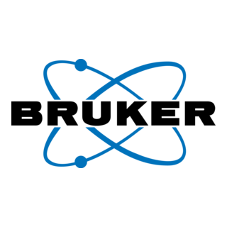

Foreign Object Damage
Tramp metal, oversize rock, and debris cause catastrophic belt tears and equipment failure.
$500K–$2M+ per year
Industrial Control Solutions LLC
Industrial Control Solutions LLC empowers mining and industrial organizations to unlock the full potential of their operations through world-class automation, process control, AI and digital transformation solutions.

Mining & industrial automation experience
Control room, SCADA, and instrumentation expertise
Rapid response engineers with global standards
What we deliver
Our expertise lies in addressing the unique challenges of resource-limited environments — process inefficiencies, workforce constraints, and overlooked improvement areas — helping clients achieve measurable performance gains and cost reductions.
The challenge
Each unsolved problem represents millions in annual losses for a single operation. AI and computer vision can now solve these problems — more accurately, more reliably, and at a fraction of the cost.
Tramp metal, oversize rock, and debris cause catastrophic belt tears and equipment failure.
AI performs better than existing technology by roughly 5%. Grinding circuits run 3–5% off optimal, wasting energy and reducing throughput.
Froth bubble size, velocity, and texture are key inputs for the flotation control circuit, yet most operations have no tools to measure them. Others have cameras but treat them as observation tools only, or their control design is sub-optimal.
Operator visual inspections are done regularly but are infrequent by nature — typically once or twice per shift — leaving long gaps where developing faults go undetected. Visual AI fills this gap.
Longitudinal belt rips and mis-tracking go undetected until catastrophic damage occurs. Vision catches these within seconds.
Stockpile volumes at crushed ore buffers, coal yards, and concentrate storage areas are measured by periodic manual surveys or drone flights. Mine planners and logistics teams end up managing millions of dollars of inventory with stale, inaccurate data.
Our products
Deployed on edge hardware at the mine site — each module runs on mining-specific trained models and integrates directly with your existing control system.
Foreign Object Detection
Particle Size Measurement
Flotation Circuit Vision
Operational Assistant Camera
Belt Rip & Mis-tracking Detection
Stockpile Inventory Management
Solutions
We provide tailored automation, control, instrumentation, AI and digital solutions that fit each operation's unique environment. With 16+ years of hands-on experience in global mining and industrial operations, we combine international best practices with local expertise — delivering rapid response, long-term support, and tangible results across Mongolia's industrial sector.
Independent reviews of DeltaV, PLC, and SCADA with a prioritized list of fixes that protect production.
Control narratives, P&ID updates, and phased CAPEX/OPEX recommendations backed by business cases.
PID tuning, APC, and interlocks that stabilize circuits, cut downtime, and reduce manual intervention.
ISA-18.2 alarm strategies, role-based HMI, and incident-proof operating procedures.
Selection, calibration, and condition monitoring to keep critical sensors within design limits.
Data pipelines and KPI dashboards that give supervisors and leadership the same source of truth.
Flagship product
ICS builds custom computer vision solutions that help mining operations improve safety, reduce downtime, and automate visual inspection across the entire extraction process. Our models are trained on mining-specific data and built to perform in harsh mining environments.
Foreign Object Detection System
The ICS-FOD is an AI system that provides continuous, real-time detection of foreign objects on conveyor belts in mining and mineral processing operations. By combining an AI engine, embedded computing device, industrial-grade camera, and a configurable alarm and integration platform, ICS-FOD identifies hazardous objects before they reach critical downstream equipment — preventing costly belt damage, equipment failures, and unplanned production downtime.
Detects ferrous & non-ferrous tramp metal and oversized objects — classes missed by conventional metal detectors.
From object entering camera FOV to alarm output — instant belt stop on confirmed detection.
No blind spots between inspections. Operates overnight and during shift changes with no operator input.
Delivery method
Free assessments covering alarm floods, loop health, instrument reliability, and HMI usability to target quick wins.
On-site, remote, or hybrid delivery with clear milestones, risk controls, and production-ready testing.
Partners & distribution
We represent world-class instrumentation and analysis brands in Mongolia, backing every supply with local engineering, commissioning, and after-sales support.

Industrial Control Solutions LLC is the official distributor of Bruker in Mongolia. Bruker's scientific instruments and analytical solutions — including X-ray fluorescence and diffraction systems widely used for ore grade control, mineralogy, and materials analysis — are available to Mongolian mining and industrial operations through us, with local sales, commissioning, and technical support.
Proof of work
Measurable outcomes and direct feedback from the operations we've worked with.
Before/after outcomes from real engagements — placeholders below, pending real project facts.
[Project type, e.g. Belt reliability upgrade]
[1-2 sentence description of the problem and what ICS did about it]
[Project type]
[Description]
[Project type]
[Description]
Direct quotes from the people we've worked with — placeholders below, pending real testimonials with permission to publish.
[Placeholder quote — what changed after the engagement, in the client's own words]
[Placeholder quote]
[Placeholder quote]
Our team
A multidisciplinary team of automation, electrical, AI and data engineers delivering results across Mongolia's industrial sector.
Co-founder — Automation Engineer
16+ years specializing in automation across mining and industrial operations, with deep expertise in Emerson DeltaV DCS, Metso OCS 4-D advanced process control, Aveva PI data systems, and continuous improvement.
Previously led and delivered automation and optimization projects at Oyu Tolgoi (Mongolia) and Kennecott Utah Copper (USA). Graduated from Ural State Mining University in Automation of Technological Processes and Production.
Co-founder — Electrical & Automation Engineer
8+ years in concentrator-plant maintenance, reliability, and automation. Expert in low/medium-voltage systems, PLC programming, instrumentation, and DeltaV.
Improved equipment reliability and reduced downtime through CAPEX planning, asset management, and OEM partnerships. Graduated from MUST in Industrial Automation.
Data & Software Engineer (Remote)
Experienced in data-pipeline and ETL development and maintenance. Skilled in Python, SQL and C#, with strong data modeling, analysis, and visualization experience. Builds robust data integrations and communicates clearly with both technical and non-technical stakeholders.
Microcontroller Programming at the National University of Mongolia. Data Analytics at Toronto School of Management. Computer Programming at Niagara College.
AI & Computer Vision Engineer
AI and computer vision engineer with over a decade of experience across robotics, 3D vision, sensor calibration, embedded systems, and machine learning. His work spans 3D reconstruction, multi-sensor registration, ROS-based robotics, localization, embedded vision optimization, and image/video processing.
Industry experience at Sony, Kailas Robotics, and startup ventures — bringing deep technical expertise in making cameras see, understand, and measure the physical world.
Get in touch
We look forward to hearing from you.